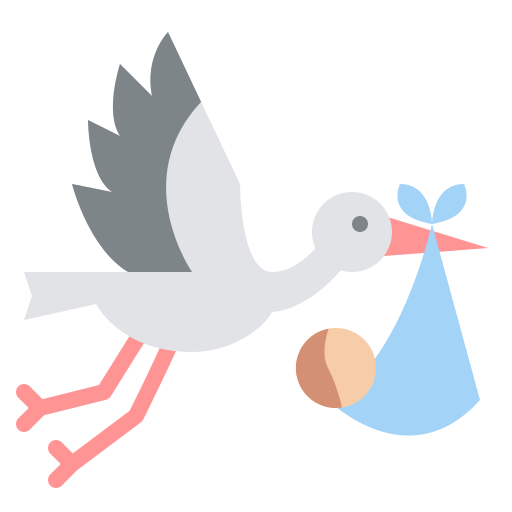
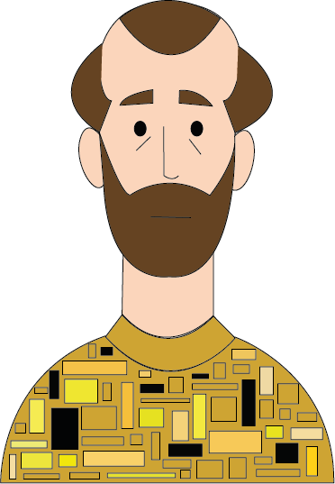

Gustav Klimt


Nascita:
14 Luglio 1862, Vienna, Austria
Morte:
6 Febbraio 1918, Vienna, Austria
Corrente:
Art nouveau, che in Austria prende il nome di Secessione


Opere più famose: Giuditta I 1901; Il bacio 1908
Curiosità: Il padre e il fratello di Klimt erano entrambi orafi incisori. All’epoca del Bacio Klimt usava così tanto oro nei suoi quadri che questo fu definito proprio il suo “periodo d’oro”.
Citazione: "Chi vuole sapere di più su di me, cioè sull’artista, l’unico che vale la pena di conoscere, osservi attentamente i miei dipinti per rintracciarvi chi sono e cosa voglio”